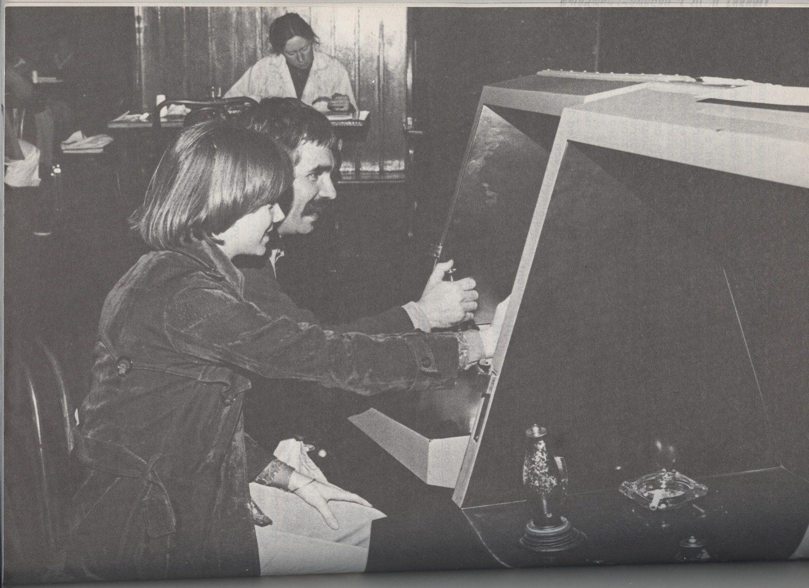
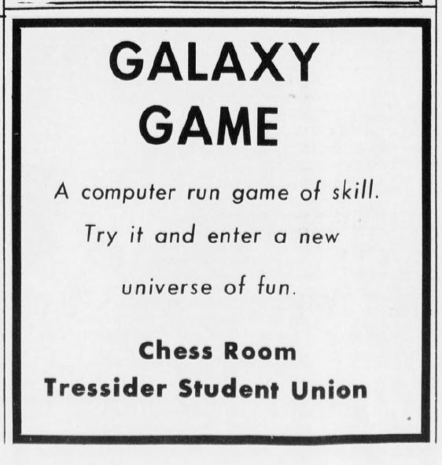
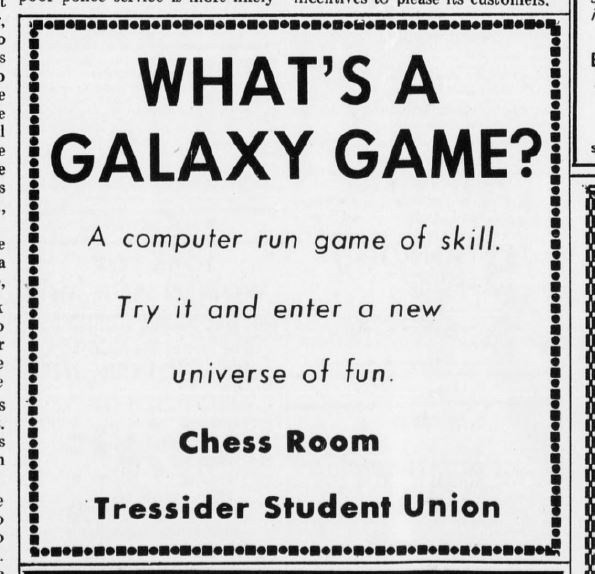
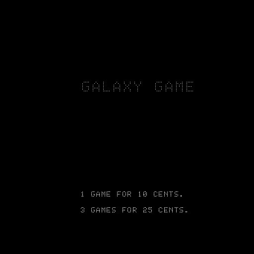
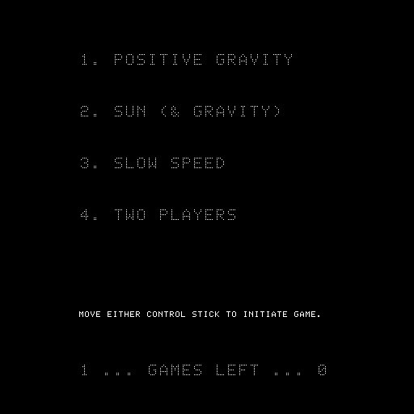
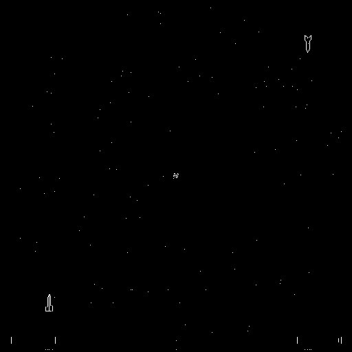
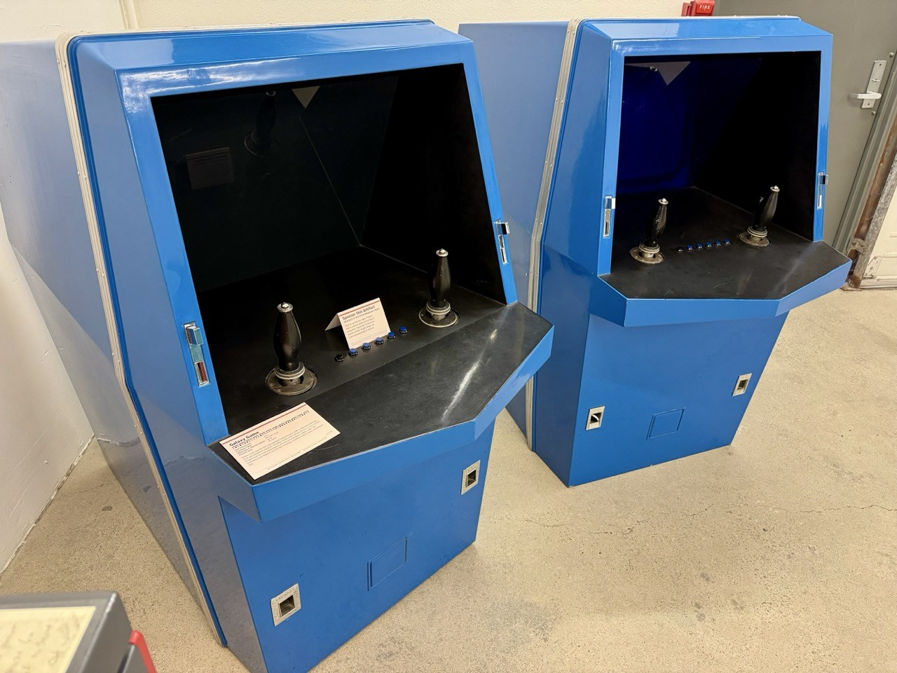
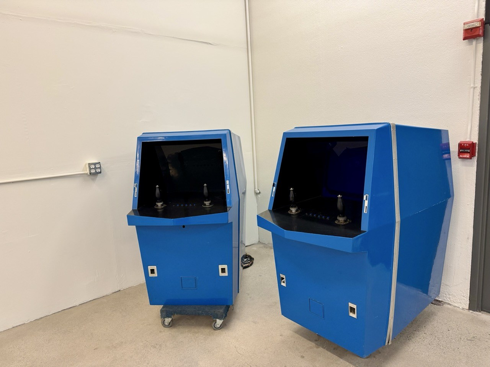
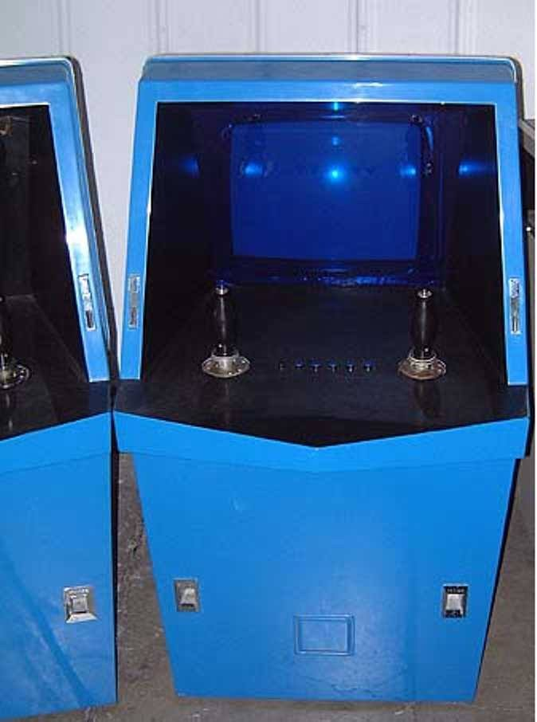
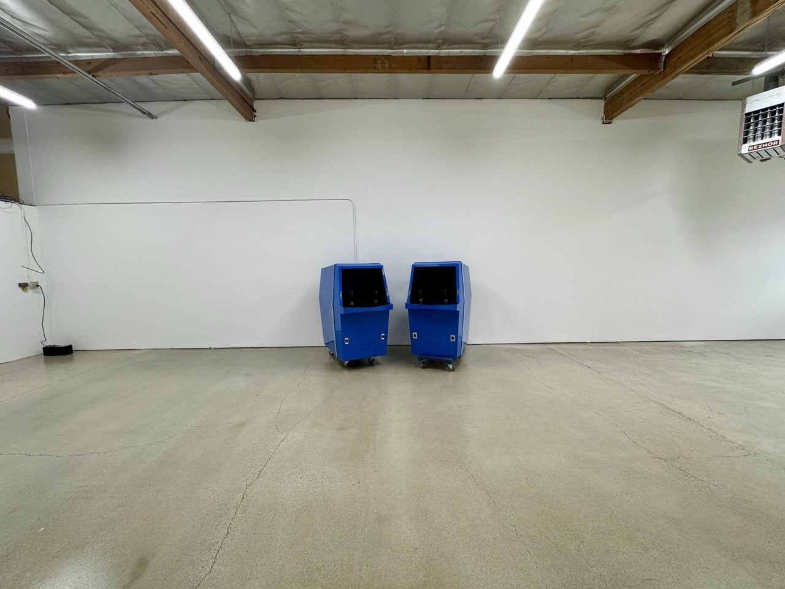

Computer Recreations belongs to the history of arcade games through one project: Galaxy Game. Bill Pitts and Hugh Tuck adapted the Spacewar tradition for a coin-operated installation at Stanford, then redesigned the equipment to serve more players from one computer. Their venture did not develop into a conventional arcade manufacturer with a catalog of machines sold through distributors. Its surviving story instead joins experimental engineering, location operation, student play and several generations of preservation.
The compact company record is necessarily qualified. The venture is reported to have begun in June 1971. Computer Recreations, Incorporated is the name attached to the machine in preservation records, while a surviving early-1972 business plan has been reported under Mini-Computer Applications. The precise legal relationship between those names is unresolved. No defensible dissolution date has been established. The confirmed arcade output is one game family with two major physical and system generations, first placed on location in 1971 and revised in 1972.
Those qualifications do not diminish the game’s importance. They explain what kind of enterprise it was, and prevent the familiar story of an early machine from being mistaken for a fully documented corporate history.
From Spacewar to a paying audience
Galaxy Game grew from an existing game culture. Spacewar originated at MIT and circulated among institutions with suitable computers and displays. Stanford’s Artificial Intelligence Laboratory provided the immediate setting for Pitts’s interest. The Galaxy program was a PDP-11 adaptation of that tradition, rather than the invention of space combat from scratch.
The distinction matters for credits. Steve Russell and the other contributors to the original Spacewar belong in the account of the source game. They should not become Computer Recreations employees simply because a later database carries both sets of names. The Pitts–Tuck project had its own engineering work, hardware decisions, controls, enclosure and operating circumstances.
The minicomputer made a coin-operated version conceivable, but did not make it cheap. A computer capable of supporting the familiar experience still represented an exceptional investment for a machine earning small coins. The venture’s technical ambition and its economic difficulty were closely connected: much of what made the game attractive to computer enthusiasts also made the equipment expensive.
Pitts handled programming and electrical/system work; Tuck, a mechanical engineer and his high-school friend, designed the enclosures. Later accounts describe a conscious decision to use the name Galaxy Game rather than Spacewar in the climate of antiwar feeling on campus. That explanation comes from retrospective testimony, not an inspected contemporary naming memorandum.
The first machine and its arrival
The original console had a walnut-veneered, angular enclosure and seated players. The computing equipment was separate from the console, connected by a long cable. The first-system specification consistently reported in the stronger accounts is a DEC PDP-11/20 with an HP 1300A electrostatic X-Y display and a custom display interface. Approximately $20,000 describes the assembled first system, not simply the price of its computer.
A period photograph preserved in the Gametronics Proceedings shows players at the early angular cabinet. It supplies a valuable visual counterpart to the better-known blue machines. The exposure date is not established: the proceedings’ publication date must not be reused as the date of installation or photography.

When did the public first encounter it? The often-repeated answer is September 1971, but the strongest evidence presently points to late November. Historian Keith Smith reported that Hugh Tuck’s early-1972 plan described development continuing through November and installation in the Chess Room at Tresidder Memorial Union late that month. Two Stanford Daily advertisements, identified with the November 29 issue, promote Galaxy Game and direct readers to the Chess Room. Their actual reproduced images have been preserved.


The original business plan has not been inspected directly. Its chronology is known through a reported excerpt and is supported by the newspaper evidence. November 29 is the advertisement date, not a proven installation day. The surviving evidence therefore supports a late-November placement while preserving the competing September recollection.
This also changes how the machine’s priority is described. Galaxy Game was an exceptionally early coin-operated video game, but an unqualified claim that it was the first is not supported by the current chronology. Computer Space had its own earlier testing and public exhibition history. Neither project needs to be credited with the other’s work to explain the emergence of commercial video games.
Playing Galaxy Game
Galaxy Game brought computer-controlled space combat into a setting where players could pay for a turn without obtaining access to a laboratory computer. The familiar elements included maneuvering ships, firing at an opponent and dealing with the influence of a central sun. Its controls and selectable conditions made it a more demanding proposition than a game explained by a single obvious action.
Pitts’s account describes hyperspace as another, invisible space rather than a random relocation. A pursuer could follow an opponent into it and continue firing, at substantial fuel risk. This is an important distinction from generic descriptions of Spacewar. Accounts of one implementation’s rules should not automatically become the rules of every related game.
The advertised charge was a dime for one game or a quarter for three. Later preserved software views repeat those prices. Accounts also describe a survival-and-fuel-based free-game arrangement. Precise conditions should remain tied to the particular testimony or program version: a modern still image cannot establish a complete rule book.
The available emulation images help show what the later preserved program looks like. One contains the title and pricing. Another displays a set of choices involving gravity, the sun, speed and two-player operation, with separate remaining-game counters. A third shows the ships, central sun and star field during play. They are MAME images supplied by the Interim Computer Museum, not photographs of a 1971 display.



The original printed instructions have not yet been recovered. Exact single-player behavior, every option, the full fuel calculation and all differences between the first and later programs therefore remain unresolved. The descriptions here stay within what the surviving documents, software views and testimony support.
Redesigning the system
The second Galaxy Game was a substantial engineering revision. Its blue fiberglass consoles were more than new packaging: the revised display architecture was intended to spread the cost of one computer across multiple playing positions.

Pitts’s recollection identifies Tuck as the designer of the fiberglass cases, Peterson Products in San Carlos as their fabricator, and Ted Panofsky as the engineer hired for the later display processor. This gives the venture a more specific production history than the shorthand that two men simply built an arcade machine. The outside contributors belong in the story even though there was no normal production line.
The Stanford installation used two console/display positions. Accounts describe the possibility of separate games or combined multiplayer play, as well as plans for a larger number of displays. Their statements about maximum capacity are not fully consistent. Planned capacity, installed consoles, players per display and total systems are different quantities; combining them produces misleading machine counts.
The two generations are consequently cataloged together as Galaxy Game, with separate version histories. Two database entries do not establish two distinct titles, and the number of console positions does not establish a production run.
The preserved technical record also requires care. MAME’s galgame driver loads a listing identified with the later blue dual-cabinet revision. Its 1971 metadata does not transform that listing into a verified copy of the first machine’s program. Nor do the emulator’s processor core, clock settings or display dimensions establish the chips, exact speed or physical screen technology inside the original equipment.
A preservation-page transcription introduces a further unresolved detail by calling the computer a PDP-11/15. Stronger accounts specify the PDP-11/20. Without the original placard or a hardware record explaining the discrepancy, the transcription is a conflict to preserve, not evidence for a newly discovered third version.
A popular installation and an expensive experiment
The machine’s local appeal and its commercial limitations can both be true. Stanford provided players willing to learn a complicated game and return to it. The installation became part of a particular community rather than evidence that the same equipment would work equally well at every coin-op location.
The economics should be described with the same care. Approximately $60,000 is the stronger direct-interview figure for cumulative development spending; later summaries sometimes give $65,000. Neither figure is supported here by inspected accounts. The cost of the first machine, cumulative project investment and subsequent location receipts must remain separate.
Pitts recalled that receipts eventually repaid the principal investment by the time he removed the equipment in 1979. That is not a statement that the company earned a documented net profit, paid the founders for their labor, or succeeded as a manufacturer. Equally, a later writer’s claim that the coins could never repay the hardware should not erase Pitts’s testimony without addressing it.
Some accounts describe disappointing performance when another system was moved to other locations. The identity and travels of that equipment are not securely reconstructed. A neat story in which a particular cabinet followed a known itinerary would exceed the evidence.
The Stanford installation was removed in May 1979 amid growing maintenance and display-processor reliability problems. This is an endpoint in the machine’s operating history, not a corporate dissolution record. The company’s legal end remains unknown.
Survival, restoration and software preservation
Galaxy Game survived because its components were retained and later reconstructed as operating historical equipment. An older written account supports restoration activity in 1997, followed by display in Stanford’s Gates building and a museum move recorded for summer 2000. A later recollection gives a different approximate restoration date; the older written sequence provides the stronger chronology.



The evidence notes below retain the restoration participants, reported component problems and distinctions between original testimony and later additions to the copied account.
The restored system subsequently passed through the Computer History Museum and Google. Former player Jonathan Rosenberg’s renewed connection with Pitts is part of that preservation story. Conflicting statements about the precise timing of the Google move remain documented rather than hidden behind an artificially exact timeline.
The latest institutional report places the equipment at the Interim Computer Museum for another restoration. The museum reports a rebuilt PDP-11 power supply and a running computer, with the HP 1300A displays still needing refurbishment. This describes a preservation project in progress; it is not a claim that the entire original system has already returned to full public operation.
The surviving program listing offers another route to preservation. It makes software study and emulation possible even when the physical machine needs repair. Hardware restoration and emulation answer different questions, however. A runnable later listing cannot by itself establish every behavior of the first cabinet, while a photograph of a restored cabinet cannot establish its exact software state.
What the company made—and what it did not
The reconciled catalog contains one confirmed family, Galaxy Game, with the 1971 first system and the revised 1972 system treated separately within that entry. The venture’s supported roles are development, system integration, cabinet conception and location operation, alongside named outside engineering and fabrication.
No evidence located in the bounded catalog review establishes a second arcade title, an export edition, a licensed commercial release or a mass-production distributor for this venture. Those are limits of the present evidence, not proof that no unrecorded proposal ever existed.
Several misleading associations have been excluded. The MIT Spacewar is the antecedent, not a second company release. Computer Space belongs to the separate Bushnell–Dabney and Nutting history. The much later CES Galaxy Games is a namesake. Other companies called Computer Recreations and articles using that phrase are not automatically part of the Pitts–Tuck enterprise.
The distinction between Computer Recreations and Mini-Computer Applications is still the consequential corporate question. A business-plan title, machine attribution and later database credit may describe different legal or operating relationships. None alone proves a rename, subsidiary, partnership conversion or incorporation date.
The original business plan, player instructions and readable contemporary identifying material could further refine the company history and the game’s rules without changing the central conclusion already supported: Galaxy Game was one ambitious game, developed through materially different systems, whose historical significance extends beyond the success or failure of a manufacturing business.
---
Evidence notes and complete game record
Company identity and the scope of the catalog
The confirmed entry is Galaxy Game, also styled Galaxy-Game, a United States coin-operated space-combat game developed and operated by the Pitts–Tuck venture. Its first public installation is best placed in late November 1971. The second system belongs to 1972. The two generations have separate physical and technical histories but do not constitute two original game titles.
The surviving evidence assigns software and electrical/system work primarily to Bill Pitts, mechanical and enclosure design to Hugh Tuck, and later display-processor engineering to Ted Panofsky. Peterson Products in San Carlos fabricated the later fiberglass cases. These are distinct roles. Calling the venture simply a manufacturer would obscure its outside fabrication and its role as a location operator.
There is no documented arcade catalog beyond Galaxy Game. No title-specific licensing agreement, export edition, distributor arrangement or commercial conversion has been established for the venture. The original MIT Spacewar is a source-game relationship, not another Computer Recreations product. Computer Space is a separate project. The 1998 Creative Electronics & Software Galaxy Games system is unrelated despite the similar name. Later New York/Nevada corporate references and a New Jersey Computer Recreations service must not be incorporated into the California company's biography without a direct connection.
The headline start date is a reported venture formation in June 1971, not a verified incorporation date. The operating setting is Stanford and the surrounding California area; a registered office address has not been established. No corporate end date has been established. The 1979 removal of the machine is not a legal dissolution and therefore cannot be used to create a corporate lifespan.
The first cabinet and the revised system
The early enclosure was described as walnut-veneered and accommodated seated play. The later consoles have conspicuous blue fiberglass bodies. Their visual difference is supported by the preserved period photograph and later preservation photographs. The period image establishes an appearance, not the complete internal specification or the date on which it was taken.
The first installation used a separate PDP-11/20 computer, reportedly in the attic above Tresidder, with a cable connection to the console. The HP 1300A was an electrostatic X-Y display. Treating that equipment as an ordinary television would lose an important engineering distinction. The point-display interface linked the computer to the screen; its design and subsequent revision were central to making the installation practical.
Pitts recalled that six to eight weeks of enthusiastic use encouraged a second system, followed by roughly another six months of work. Those remembered intervals are not a dated construction log. Historical accounts generally place the revised installation in June 1972, while a later talk supplied September. The difference remains recorded. A reported move from the upstairs Chess Room/listening area to the coffee-house setting around December 1971 is also a reconstruction, not an established exact movement date.
The later design tried to share one computer across more display positions. Two consoles were installed at Stanford. Accounts variously describe a larger intended maximum and multiplayer arrangements. Four displays, eight players, two consoles and two prototype systems are not interchangeable counts. The installed configuration should be described separately from the design's proposed capacity.
The recovered older account itemizes the first computer at $14,000 and the display at $3,000, with coin equipment and enclosure bringing the total to about $20,000. It specifies 8K bytes of core memory and an optional hardware multiply/divide unit. These are attributed specifications and recollected prices, not inspected invoices.
The controls are another area where photographs and text serve different purposes. The preserved blue-cabinet images show joysticks, switches and coin mechanisms, but the small labels cannot be reliably transcribed. A database description of keyboard controls mixes earlier Spacewar context with Galaxy Game material. It is not accepted as a direct description of the surviving cabinet's controls.
Financing, components and local reception
The approximate first-system cost of $20,000 is well established in the accounts, but the source of that money is described differently. Some secondary accounts emphasize Tuck or his parents; Pitts described contributions involving himself, Tuck and Tuck's siblings. No inspected financial records resolve the proportions. The later project's approximately $60,000 direct-interview total and the $65,000 secondary figure likewise remain different estimates rather than a single exact audited total.
Historical reconstruction reports coin equipment from Rowe International and military-surplus controls associated with B-52 hardware from J&H Outlet in San Carlos. These supplier details are useful leads, but they have not been checked against invoices or contemporary procurement records. Peterson Products and Panofsky have stronger first-person support for their roles in the later system.
The Stanford setting helps explain why the installation could attract people willing to learn a relatively complicated game. Reports of crowds and waits are evidence of remembered local reception, not sales statistics. Pitts's account of eventual principal repayment must also be kept separate from a calculation of profit: labor, maintenance, development costs and the period over which receipts accumulated are not established in a surviving balance sheet.
One historical detail remains particularly easy to overstate. Keith Smith suggested that a personal advertisement signed “Atlas” was probably Hugh Tuck's, connecting the signature with the Tuck family's Atlas Heating and Ventilating business. The family-business connection does not prove who placed that advertisement. It has not been counted among the two preserved Galaxy Game advertisements.
How the playable evidence is used
The currently available MAME driver is a preservation implementation. Its single registration, galgame, uses a listing described as belonging to the second, blue dual-cabinet hardware revision. That is valuable evidence of the later program, but it does not certify every behavior of the first installation. The metadata year and manufacturer string are not independent corporate records.
The modeled controls include rotation, thrust, firing and hyperspace, along with selectable conditions involving gravity, a sun, speed and player count. Separate dime and quarter inputs are represented. The museum's options image shows one configuration of these choices. It does not show every switch position or prove how each choice changes play. Source-reported screen-edge behavior and separate ship/torpedo speed variations remain questions for the original instructions or controlled observation.
MAME's T11 emulation core, clock value and display dimensions are implementation details. They do not establish that the historical machine contained a T11, used that exact clock, or had a physical raster screen of the same dimensions. Likewise, the driver's no-sound-hardware designation is technical-preservation evidence rather than a substitute for a direct physical sound investigation.
The three emulation images serve different purposes. The title screen documents the preserved program's pricing presentation. The options screen documents its interface and counters. The active-play still illustrates the visual field. None establishes motion, collision timing, exact fuel arithmetic or the behavior of hyperspace, so those details remain open where the evidence is incomplete.
Preservation chronology and attribution
The older account describes the computer and displays being stored in an office while the fiberglass cases remained outdoors for eighteen years. Renewed interest began when Pitts contacted Les Earnest while considering disposal of old equipment. Stanford’s interest in an operating exhibit turned that contact into a restoration opportunity.
Restoration accounts name Panofsky alongside Pitts, with Doug Brentlinger, Paul Mancuso and Victor Scheinman also credited as helpers in the recovered account. That source describes reconstruction from original schematics and attributes reliability trouble to early wire-wrap IC sockets. These details are retained as testimony rather than results of a new hardware inspection.
The copied Stanford account contains later additions beneath its 1997 attribution. Its statement about a subsequent museum move cannot all have been written at the date attached to the original account. The earlier written sequence nevertheless supports restoration in 1997 over the approximate 1998–1999 date in a much later recollection. The source is therefore treated as a layered document rather than a single contemporaneous account.
The Google episode also contains a timing difference: Pitts's later account places the move in spring 2010, while some preservation summaries use August. The main article uses the year and sequence without choosing an unsupported exact month. Former player Jonathan Rosenberg's reconnection with Pitts explains the human link in that episode; details of youthful play and assistance with the machine remain attributed recollections.
The Interim Computer Museum's restoration report is strong evidence for its own current work and participants, including Pitts, Josh Dersch and Robert Schmuck. Its repetition of the older September installation date does not displace the newspaper and reported business-plan chronology. An institution can be a primary source for what it is doing now and still repeat a weaker account of events decades earlier.
Open questions
Several parts of the Computer Recreations story remain open to better primary evidence.
What was the legal relationship between Computer Recreations and Mini-Computer Applications?
An original early-1972 business plan, corporate filing, letterhead, contract or other identifying document could clarify whether the names described the same venture, a rename, or a separate legal structure.
Contribute evidenceWhen did the company itself cease operating?
The Stanford Galaxy Game installation remained in operation until May 1979, but no legal dissolution or corporate endpoint has been established.
Contribute evidenceDo the original player instructions or readable contemporary control labels survive?
They could resolve the exact single-player rules, options, fuel behavior and differences between the first and later programs without relying on later descriptions.
Contribute evidenceWhich PDP-11 model did the historical system use?
Stronger accounts identify a PDP-11/20, while one preservation transcription says PDP-11/15. An original placard, hardware inventory or restoration record could resolve the conflict.
Contribute evidenceWhat happened to the first system after its early Stanford use?
The later fate and location history of the first-generation equipment remain unresolved, and conflicting later descriptions do not support a definite itinerary.
Contribute evidenceCan the financing totals and maximum display capacity be documented more precisely?
Surviving accounts give different development totals and describe installed consoles, planned displays and player capacity in ways that should not be collapsed into one number.
Contribute evidenceNew primary documents or well-documented participant evidence could refine these points. The existing uncertainties do not change the confirmed one-game-family catalog.
Sources and further reading
These sources provide the principal evidence used here. Repeated database credits are not independent corroboration, and the original business plan and player instructions have not yet been inspected directly.
- Origins, roles, financing, operation and later preservation: Stanford Magazine, Bill Pitts, ’68, https://stanfordmag.org/contents/bill-pitts-68 ; Keith Smith’s interview-based account, https://allincolorforaquarter.blogspot.com/2013/03/galaxy-game.html . These are retrospective first-person and interview-based sources; conflicting recollections are identified in the text.
- Business-plan report and late-November chronology: https://allincolorforaquarter.blogspot.com/2016/08/new-info-on-galaxy-game.html . The original plan has not been inspected directly; the two contemporary advertisement reproductions independently support the late-November chronology. Cross-check chronology: https://mcurrent.name/atarihistory/syzygy.html .
- Two database version entries: https://www.arcade-history.com/game/26984/galaxy-game-first-version and https://www.arcade-history.com/game/4256/galaxy-game-second-version . These database entries are useful for version comparison but are not corporate filings or substitutes for contemporary labels; their September and priority claims are treated cautiously.
- MAME technical preservation: https://raw.githubusercontent.com/mamedev/mame/master/src/mame/misc/galgame.cpp . Used for the preserved later-program implementation and technical context, not as a corporate record or proof of the first system’s exact hardware.
- Source-game lineage: https://computerhistory.org/profile/steve-russell/ . Original MIT contributors are not company staff.
- Current restoration and three MAME images: https://icm.museum/blog/?p=698 . Primary evidence for the museum’s current restoration work; its older historical claims are weighed separately against stronger chronology and Pitts’s principal-repayment testimony.
- Older preservation photo/placard transcription: https://ed-thelen.org/comp-hist/vs-comp-rec-galaxy-game.html . Useful for the PDP-11/15 transcription conflict and the limits of reading small surviving labels.
- Earlier Pitts account: https://ipmall.law.unh.edu/sites/default/files/hosted_resources/Activision_Readings/Real_inventorsofarcade_videogames.pdf . This is a compilation with later editorial layers and should not be treated as wholly a 1997 text.
- Period photograph: https://archive.org/details/GamtronicsProceedings/page/n159/mode/2up . The publication date does not establish when the photograph was taken; the image is used independently of unsupported surrounding narrative.
- MOTG catalog: https://www.arcade-museum.com/Videogame/galaxy-game . A database census is not a total of physically manufactured systems.